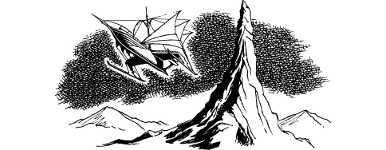

350
It is nearly dark when you enter the hills and ride with Delissa to your rendezvous at Xaitar’s Rock. Within minutes of arriving at this spire of weathered granite, you see a thin sliver of light in the darkening sky. You magnify your vision and your heart skips a beat when you see that this sliver is the sleek metal hull of Cloud-dancer—Guildmaster Banedon’s wondrous flying ship—fast approaching from the southwest.
Banedon brings his vessel to a halt directly above the spire of rock. Then a landing cage is winched down and a young Toranese crewman beckons you and your companion to step inside. Your stomach flutters as the cage is hoisted up to the deck of the flying ship where the Guildmaster himself is waiting to greet you and congratulate you upon the success of your mission.
{kind=link}

Within minutes of your arrival aboard, a new route is charted and Cloud-dancer is set on course for the city of Varetta. The journey by air takes little more than two hours and, although darkness has fallen, Banedon has little difficulty locating the city. Its siege-damaged walls are ringed with beacons of fire that are visible from 50 miles. As you draw closer, you see the lifeless remains of the Vorka horde spread out across the plain surrounding Varetta, and the regiments of the Freeland Alliance marching proudly towards the city gates. The beacons guide Banedon’s craft towards the centre of the city where it is made to hover above the Halls of Learning. Swiftly you are lowered by cage to the grounds of this magnificent building where the New Order Kai are encamped. You are greeted by the thunderous cheer of your fellow kinsmen, and the proud embrace of Lone Wolf and Gwynian the Sage. It is a joyful and victorious reunion, one that will live forever in your memory and in the legends of the New Order Kai.
News of your arrival spreads quickly through Varetta and you are fêted by its grateful citizens. By your brave action, the cruel siege of their city was lifted. Following a night of celebration, Lone Wolf orders you to return in triumph to the Kai Monastery aboard Cloud-dancer the next day. He will ride home with the New Order and arrive with them in a week’s time. Gladly you obey your leader’s command, and shortly before noon you wave farewell to your proud brothers from the deck of Banedon’s magnificent flying ship.
Early the next day, you arrive at the Kai Monastery and deliver the glad news of your victory at Skull-Tor. Warmly the defenders praise your achievement and listen in awe when you recount the details of your perilous mission. You inform them that Lone Wolf and the Kai crusaders are returning from Varetta and will arrive at the monastery one week from today. You are now the highest ranking Kai present at the monastery and so you take charge and oversee preparations for their welcome home.
Five days pass and the preparations are completed ahead of schedule. Everyone is looking forward with eager anticipation to their return. It is late in the afternoon when a Kai scout named Gold Rain arrives unexpectedly at the monastery. His face and clothes are badly travel-stained, and it is clear from his state of near-exhaustion that he has ridden hard without rest. You are hoping that he brings glad tidings, but you soon learn the contrary. Gold Rain has grave and shocking news to impart.
You learn that Lone Wolf has disappeared. During an overnight encampment on the outskirts of Ruanon, your leader was abducted. Those who witnessed the abduction said that Lone Wolf was engulfed by a whirling black shadow that fell upon him from out of a stormy sky. So swift was the attack that your fellow Grand Masters were unable to prevent him from being carried away.
A cold chill runs down your spine when you listen to Gold Rain’s report. His description of the whirling black shadow is identical to the form adopted by Zorkaan the Soultaker. You are filled with a gnawing sense of doubt, a fear that the destruction of the rune used by Vandyan to summon Zorkaan did not bring about the fell creature’s demise. Instead, it has trapped Zorkaan on Magnamund. Immediately you suspect that Lone Wolf’s abduction is an act of revenge. Your Sixth Sense tells you that Lone Wolf is still alive and present somewhere upon Magnamund, but you cannot determine where that place is.
You have achieved a great victory at Duadon, but the shocking news of Lone Wolf’s disappearance casts a shadow of doubt over your triumph there. You fear that the loss of your illustrious leader is too high a price to pay for the defeat of Vandyan and his Vorka hordes. Your natural instinct is to do everything in your power to find Lone Wolf and release him from his shadowy abductor. But this will be a great and difficult task, one that is sure to test your bravery and skills to the limit. If you have the courage and resolve of a true Grand Master, the challenge of finding and freeing Lone Wolf awaits you in the next exciting adventure, entitled: